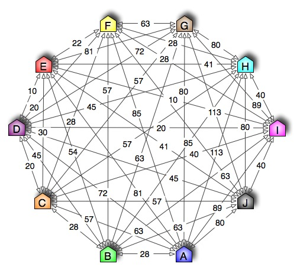

This tutorial introduces an benchmark problem for optimization tasks known as the travelling salesman problem and illustrates how to solve it with a genetic algorithm. For an introduction to evolutionary algorithms read the Introduction to EALib tutorial first.
This example reproduces a classical experiment and does not reflect the state-of-the-art in evolutionary algorithms for TSP.
This is an advanced example showing how to implement a tailored evolutionary algorithm using the EALib.
The traveling salsman problem is a combinatorial optimization task. A salesman is supposed to visit n cities. Each travelling connection is associated with a cost (i.e. the time fot the trip). The problem is to find the cheapest round-route that visits each city exactly once and returns to the starting point.
The figure shows the example used in this tutorial with 10 cities.
